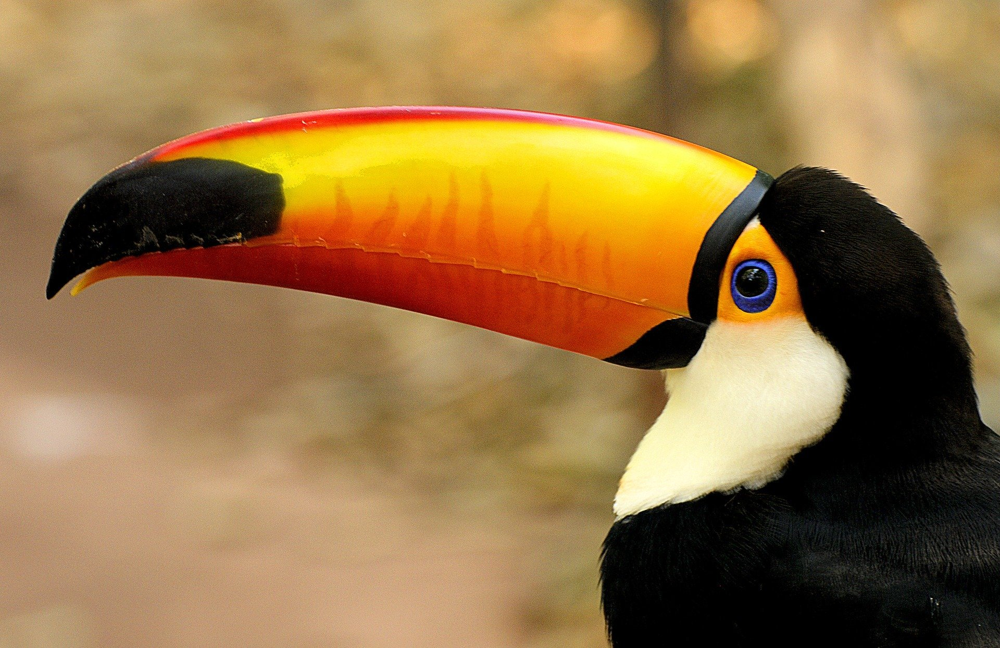
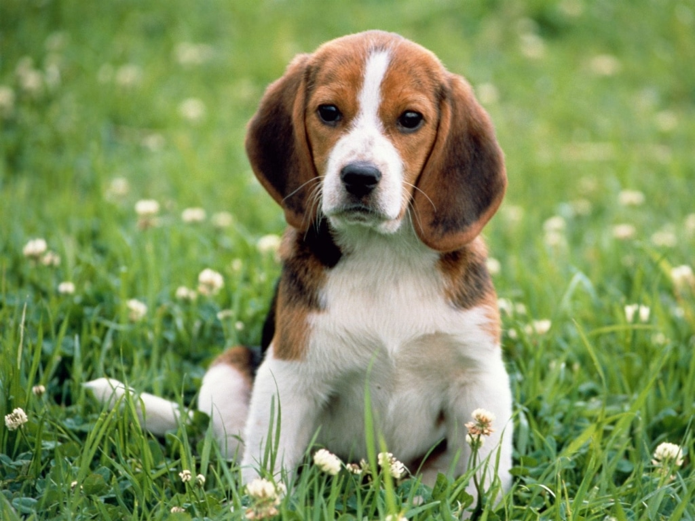
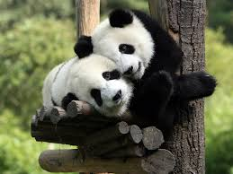

.jpeg)

|  | |
 |  |
Trabalhar com você foi tão confortável quanto se enrolar em um bambuzal depois de um dia longo! Sempre nos sentimos acolhidos, respeitados e compreendidos. Você tem a paciência de quem entende que às vezes a vida precisa de uma pausa e um abraço. Obrigado por cuidar tão bem da gente!
Eu mudo de cor o tempo todo, mas o carinho e a atenção que recebi de você foram constantes. Adaptar-se ao meu jeitinho peculiar nunca foi um problema pra você. Sou grato por me deixar ser quem eu sou, sem julgamentos.
Normalmente, eu não confio fácil nos humanos, mas com você foi diferente. Você me respeitou, me deu espaço, mas também esteve presente quando precisei. Uma relação como essa? Rara. Miaugradeço por tudo!
Conviver com você foi como um mergulho calmo em um rio ao entardecer: tranquilo, seguro e cheio de boas vibrações. Você respeitou meu ritmo e minha essência zen. Poucas pessoas entendem a arte de simplesmente... estar.
Colorido como meu bico foi o carinho com que você me tratou. Adorei como você escutou até os meus gritos mais altos — e não são poucos! Obrigado por sempre me dar voz e espaço para brilhar.
Sou o rei da selva, mas com você, até eu me senti cuidado como um filhote. Sua liderança silenciosa, seu respeito e sua firmeza me mostraram que confiança não se impõe — se conquista. Que honra ser seu cliente.
Você foi puro amor, assim como eu! Sempre atento, brincalhão, disponível e cheio de energia boa. Obrigado por me acolher com tanto carinho e por me fazer sentir parte da matilha.